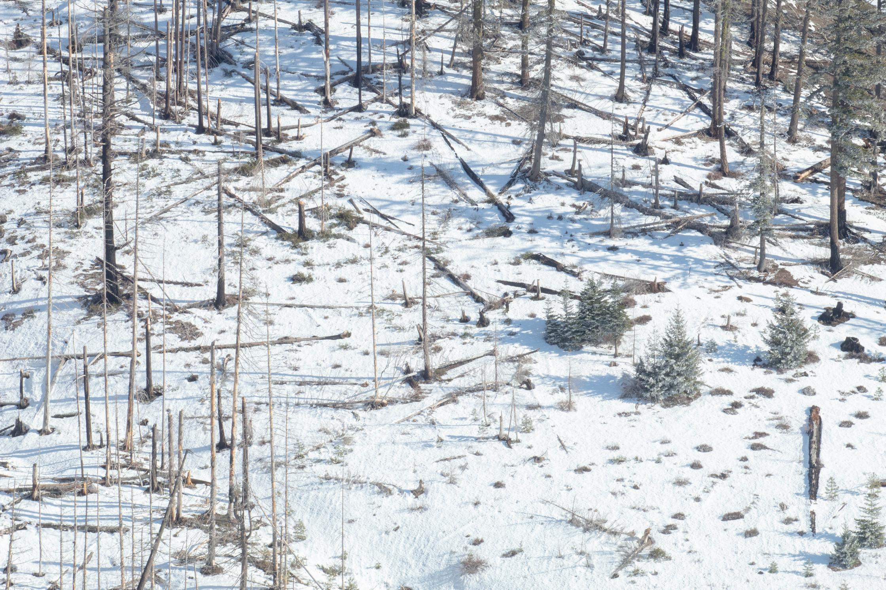
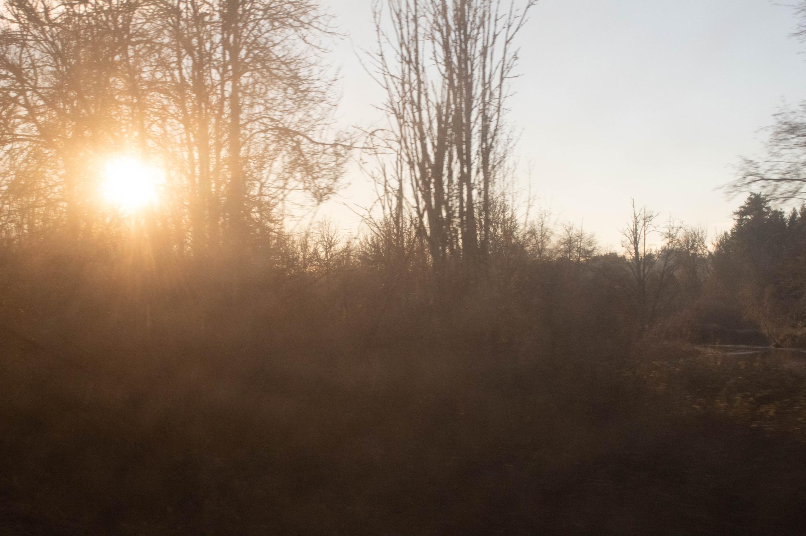
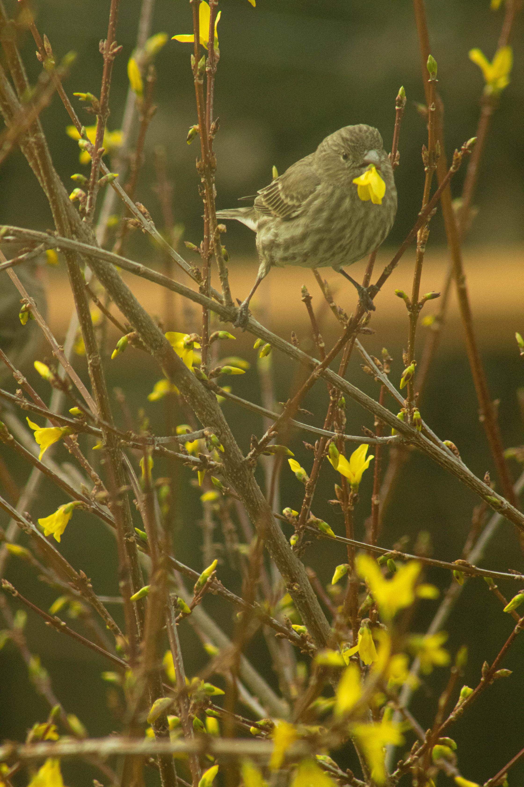

Hex Mountain II
March 5, 2026
We're hip to hip on the summit of Hex Mountain, on the cut up Z-pad I use for an alpine seat in winter. It's wide enough for three butt cheeks and we have four. She gives me two thirds and puts her extra cheek off the side on an emergency blanket stuffed in its sack, pulled from her running vest and laid next to us.
It's what the skiers call a bluebird day. Earlier she told me that true blue is rare in nature. There aren't many genuinely blue birds; few plants or animals produce the blue pigment.
But aren't there blue birds? I look it up later: it's structural coloration, a trick of light that doesn't rely on pigments, rather on the interference of light reflected on complex nanostructures, e.g. those that make up a Stellar Jay's feather. Beauty from waves out of phase.
She leans in close as I use an app on my phone to try and identify peaks on the horizon.
"Can I hug you?"
I laugh. She sits her chin on my shoulder. The app isn't working.
I say, "Can I kiss you?"
She doesn't smell like a hiker. I like that whatever she does smell like isn't store bought.
I've spent two days on Hex in my life and both of them have been pleasant, simple days outside with good company. Before we're off the mountain, I'm wondering what or where the hex is. Magic can be of service, like a love potion. But a hex? That's meant to trip someone. I am, however, plunge stepping down a snowy slope, vaulting over fallen trees, and yelling Holy Hell.

But then, on the car ride home, she tells me that her mother is dying and that she's heartbroken that she won't have kids before it happens.
She talks about avenues of life that are no longer accessible to her. She can handle not having kids. But she's devastated that if she does have kids, her mom will never meet them. Her mom would be a good grandma, she says.
When we crest Snoqualmie Pass, she tells me she's not looking for a relationship. By the next exit, she's said she should probably move back to New Mexico.
"I am a walking red flag," she says.
She's crying.
Now I'm feeling tripped up.
I often think in terms of stories. I crop and arrange my memories until there's a through line that's both coherent and meaningful.
I read all the time. In the evening, when I'm tired of reading, I watch movies. And when I'm too tired for a movie, I watch TV.
A good story feels richer than life. Or, rather, the time between hits of real life, which is what I fill with the stories. It's safe to long and to live recklessly within the pages of a book because any action there is only vicarious. Shut the book, step away, and I'm back in my apartment by myself.

I wake up at 6:30 AM the morning after Hex and open Writers & Lovers. Here's a story about a woman named Casey who feels melted by a man she kisses, Silas, who is not the man she's started dating, Oscar. Silas, weeks previously, stood her up and left for an unplanned trip out west. She's written him off: "I'm done with guys like this, on and off, here then gone. I've learned my lesson."
Then he shows up at her work:
'I'm sorry I broke our date. I just wanted to tell you that in person. I understand why you'd be mad or--' Fftht. Marcus's door is open, and I know he's listening to every word.
'You don't have to explain.'
'I want to,' he says, more loudly than he meant to. 'Sorry. It's just. Sometimes in the past year or so this feeling would come over me, kind of like a rash, you know? I needed to be in motion. And this time I had the opportunity to really go and I felt like I had to take it even though I really did want to go out with you. Really. A lot. I just wanted to explain that. I thought it would be a better date with you if I'd gotten that feeling out of my system.'
'I get it. I really do. Thanks for telling me.'
I try to make it sound final, like that's the end of it and the chance for that date has passed. I try to start moving back into the dining room but my body doesn't budge.
'Any glimpses of the sublime out there?' I hear myself say.
'One or two.' He grins.
I forgot about the chip in his tooth.
Shit.
Good for them. I am myself down a woman since last night. But why waste the day? I'll take the book out for a date. We go for a walk.
We head uphill past the Trader Joe's and the three 600 foot radio towers at 17th and Madison. It's another clear day and I can see the white-tipped Cascades behind the skyscrapers in Bellevue. The sun hasn't burnt the frost off the asphalt on 18th yet and there aren't many other people out.
Inside Alexandra's Macarons & Cafe there's a crew of middle-aged folks meeting for breakfast, plus a few others. The woman behind the counter looks a couple years older than me. She's got an apron on over a white t-shirt and light jeans. She's in no rush when I tell her that I want a waffle and a drip coffee.
"Sweet or savory?"
"Savory." It's cheddar and herbs.
"And do you want the egg?"
"I do."
"Gotta have the egg," she says.
She's brewing a fresh pot of coffee, so I take my book to the marble two-top in the alcove by the front windows and wait. Condensation drips down the windows in long, half-inch streaks. As I lay my book out on the table, she comes by with a glass and a water bottle.
"Gotta stay hydrated," she says. She's like an older sister the way she looks out for me. Better not be pity.
I mean, this date is a charade. But I've grown some affinity for Writers & Lovers and I'm grateful for this time with it. Does it have to be different than an actual date?
The waffle and the coffee come out after ten minutes and I've only read a few pages. If, in this cafe surrounded by strangers and their conversation, my attention wanders, that's okay.
There's a woman next to me with an empty plate, a coffee mug, and a notebook on her table. She writes with big looping letters in blue ink.
The middle-aged crew pushes out their chairs, puts on their jackets.
"What's the rest of the day looking like?" they ask each other.
I pick up my fork and steak knife and cut a piece off the waffle, carefully with great posture. I take a moment to see the line of cheddar down the middle. I dip it in syrup and I chew it thoroughly. I read another page.

After half an hour, I've fallen entirely into the envelope of this story. I'm enamored by Casey and Oscar and Silas and Oscar's kids and Casey doubling down on her novel and her supportive friend Harry and the two of them waiting tables.
The writers and lovers and I pack up and leave for Trader Joe's where the cashier asks what we're going to do with the rest of our Sunday. I need to gather tax documents. I should probably see my friends or go outside.
But the characters in this book give me a collective chipped-tooth grin and I think, "Shit."
I'm two thirds through the story and the end is pulling me like it's a physical object with a gravitational field.
I'm going back to my apartment to indulge in this pleasant company. I'm going to spend the rest of the day reading this book.
My lower back will eventually lock up after all day on the couch. The sun will set and I'll look at the clock and say that's what time it is? I'll make a quick dinner in my gym shorts and go back to the couch. I'll ignore my texts. I'll laugh out loud at the funny parts. I have before me a delicious meal. I will eat past the point of being full and keep eating until I turn the last page and I'm gobsmacked by whatever's there.
And then, after some moments, a tug on some invisible thread will pull me back to the world outside the book. And before long, I'll wish that girl from Hex could have gotten to know me better.